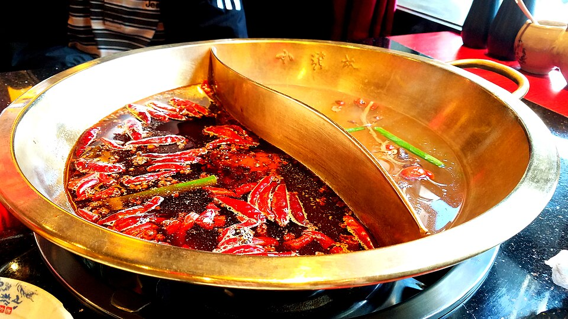
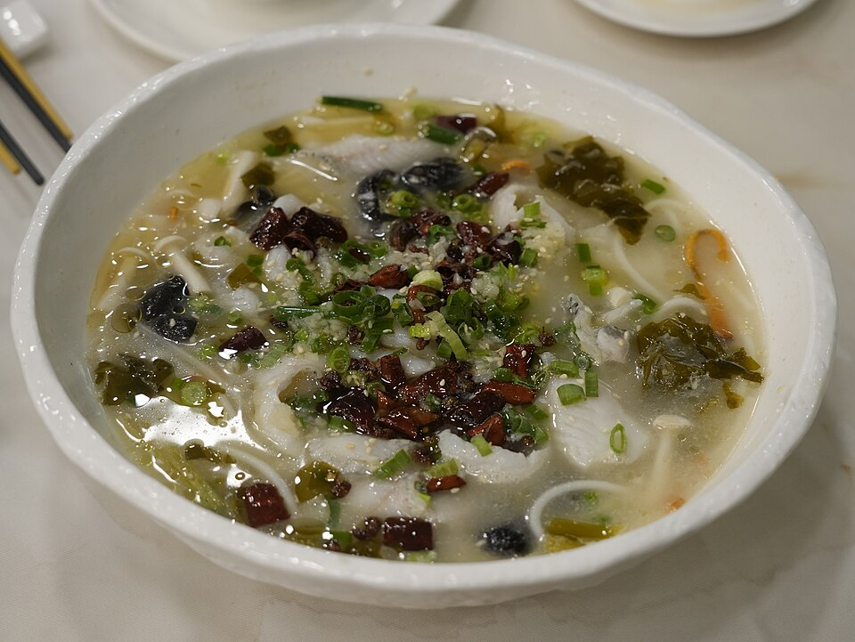
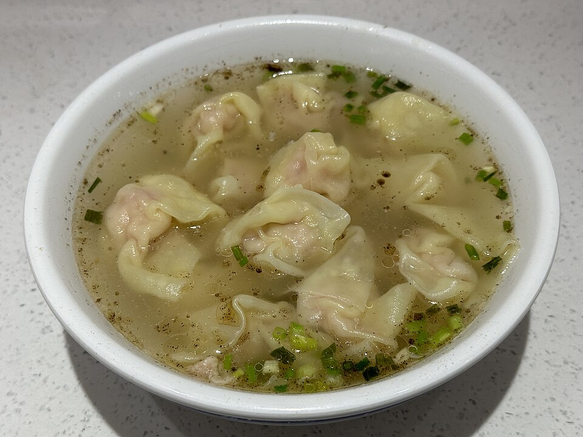

My Favorite Chinese Dishes
- Hot Pot
- Sichuan Pickled Fish
- Wontons
1. Hot Pot

Hot pot is a fun meal to share with friends and family. We cook meat, vegetables, and noodles in hot broth.
2. Sichuan Pickled Fish

This dish is made with fish and pickled vegetables. It tastes sour, spicy, and delicious.
3. Wontons

Wontons are small dumplings, often filled with pork or shrimp. I like eating them in warm soup.
Learn more about Chinese cuisine on Wikipedia.